Virtual Box 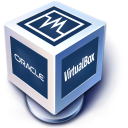
Máquinas virtuales
Una máquina virtual es un software para simular un segundo ordenador, cuyos programas se ejecutan compartiendo los recursos de nuestra máquina física (disco duro, CPU, pantalla, teclado, ratón, etc).
Por ejemplo, en la siguiente imagen vemos un sistema operativo linux mostrando su escritorio dentro de una ventana sobre la pantalla de un Mac.
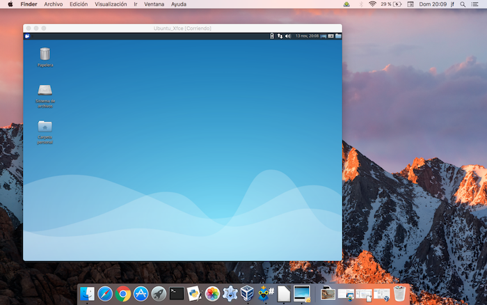
El uso de máquinas virtuales resulta interesante para muchos propósitos:
-
supongamos que tenemos un Mac y necesitamos ejecutar un programa windows; podríamos tener una máquina virtual con el sistema operativo de Microsoft y ejecutar allí el programa deseado
-
o bien queremos probar Linux en un ordenador windows; la virtualización permite hacerlo sin necesidad de desinstalar lo que tenemos
-
imaginemos por otra parte que estamos desarrollando una página web y queremos comprobar como se visualiza en cada entorno. Podemos crear diferentes máquinas virtuales y hacer pruebas en cada una de ellas
-
o queremos navegar por Internet dejando posibles virus alejados de nuestro ordenador. Podemos utilizar la máquina virtual y reinstalarla de vez en cuando, haciendo limpieza…
Todo esto se consigue con la ayuda de un software apropiado. En nuestro caso vamos a utilizar VirtualBox. Este programa hace lo siguiente:
-
utiliza parte de la memoria del ordenador, asignándola a la máquina virtual.
-
reserva parte del disco duro para simular un disco virtual
-
comparte recursos con máquinas físicas y virtuales: teclado, unidad DVD, USB, e incluso el portapapeles para copiar y pegar contenidos de un entorno a otro.
Claro que, no todo son ventajas. Los tiempos de arranque y apagado se multiplican por dos, ya que ahora tendremos dos computadoras. Y la velocidad de ejecución de programas dependerá de los recursos asignados. En un equipo de 4 Mb de memoria, destinando la mitad a cada sistema operativo, el rendimiento podría resentirse, por ejemplo.
Acerca de VirtualBox
VirtualBox fue creado en 2007 por una empresa alemana llamada Innotek GmbH. Aunque en sus inicios era un producto comercial, existía una versión gratuita para uso personal o evaluación. En 2008 Innotek fue adquirido por Sun Microsystems, quien a su vez fue absorbida en 2010 por Oracle Corporation. En la actualidad, Oracle lo distribuye como Open Source en su página web https://www.virtualbox.org/
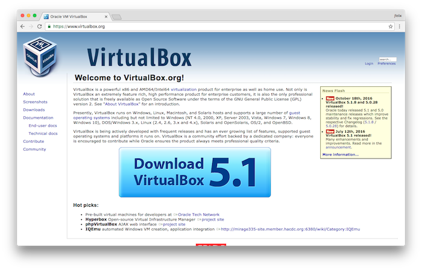
En la página de descargas tenemos versiones para diferentes sistemas operativos, así como el manual de usuario y el “pack de extensiones”, complemento que debemos instalar si quereremos hacer uso de algunas funcionalidades adicionales, como es el caso del soporte para USB o las carpetas compartidas entre máquina física y virtual.
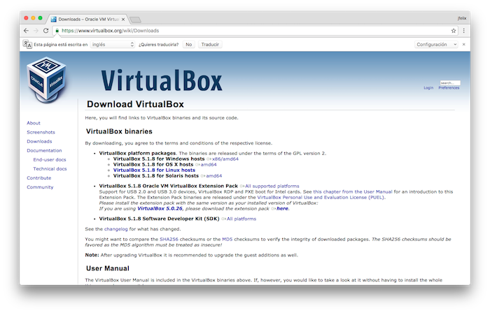
Descargar la versión para Windows
En windows el archivo que obtenemos es un ejecutable llamado algo así como VirtualBox.exe (generalmente el nombre del archivo lleva también el número de versión). Una vez descargado, hacemos doble clic sobre el fichero para iniciar el proceso de instalación y seguimos las indicaciones del asistente.
Finalizado el proceso, tendremos un nuevo grupo VirtualBox en el menú Inicio del escritorio.
VirtualBox puede desinstalarse desde el Panel de Control de Windows, seleccionando la opción Añadir/Quitar Programas.
Descargar la versión para Mac
La versión para Mac se descarga en forma de archivo .dmg (imagen de disco). Al hacer doble clic en el fichero descargado se abrirá una ventana mostrándonos el contenido. Hacemos clic en el programa de instalación VirtualBox.mpkg que encontraremos dentro de esa imagen de disco.
Tras finalizar el proceso de instalación, encontraremos VirtualBox en la carpeta Aplicaciones del sistema.
Para desinstalar VirtualBox, abrir de nuevo la imagen de disco .img y hacer clic en el icono uninstall.
Iniciando VirtualBox
Cuando ejecutemos VirtualBox tendremos en nuestro escritorio dos ventanas. En la pequeña vemos el panel de control, con una lista de máquinas virtuales que podemos configurar y gestionar. La ventana grande con fondo azul muestra el escritorio de una de esas máquinas, ejecutandose bajo el sistema operativo Linux.

Para poner en marcha VirtualBox, en ordenadores Windows, pulsamos sobre el botón Inicio del escritorio y seguidamente en el grupo VirtualBox.
En un Mac, abrimos la ventana del Finder y hacemos doble clic en el icono VirtualBox de la carpeta Aplicaciones.
Cuando la máquina física es Linux o Unix encontraremos alguna entrada VirtualBox en el menú de aplicaciones, posiblemente en los apartados Sistema o Herramientas del sistema.
Alternativamente podemos arrancar VirtualBox desde un terminal con el comando
$ VirtualBox
Al iniciarse se verá la ventana de control ya mencionada, también conocida como VirtualBox Manager. En el panel izquierdo tenemos una lista (por ahora en blanco) de nuestras máquinas virtuales. Los iconos superiores permiten crear/eliminar una de ellas, configurarlas o ponerlas en marcha.
El panel de la derecha muestra las características de la seleccionada en la lista. Como no tenemos ninguna, se muestra un mensaje de bienvenida.
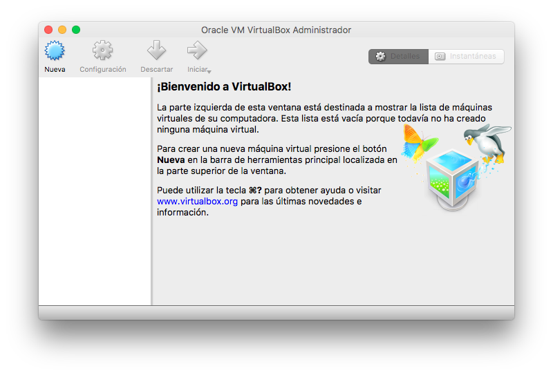
Creando un máquina virtual
Vamos a crear una máquina funcionando con el sistema operativo Ubuntu, una de las opciones más populares de Linux. Usaremos la versión Xubuntu, que utiliza el escritorio Xfce. Se trata de una versión con unos requerimientos gráficos no tan exigentes como otras más vistosas, lo que nos proporcionará mayor agilidad en el funcionamiento.
Para configurar la máquina necesitamos consultar los requerimientos mínimos (tamaño de memoria, disco duro, etc) que podemos ver en: https://xubuntu.org/getxubuntu/requirements/
En la ventana principal de VirtualBox pulsamos en el icono Nuevo, lo que da inicio al asistente para crear una nueva máquina. En la primera ventana tecleamos el nombre que le asignamos y el tipo de sistema operativo que vamos a instalar:
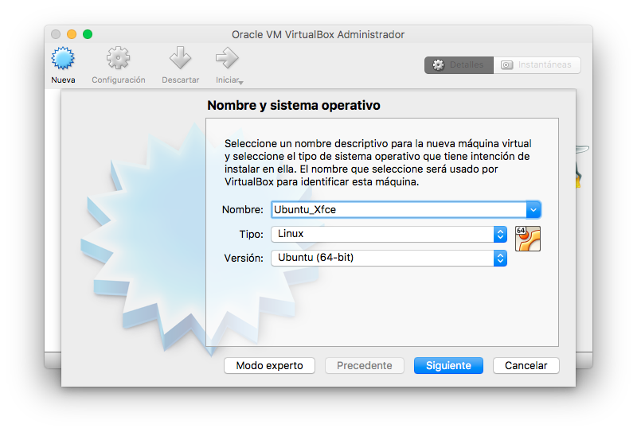
En la siguiente ventana decidimos que parte de la memoria de nuestro equipo vamos a reservar para la sesión virtual. Téngase en cuenta que si dejamos poca memoria para la máquina física, esta se verá ralentizada. Nos ajustamos a los requerimientos del sistema operativo a instalar:
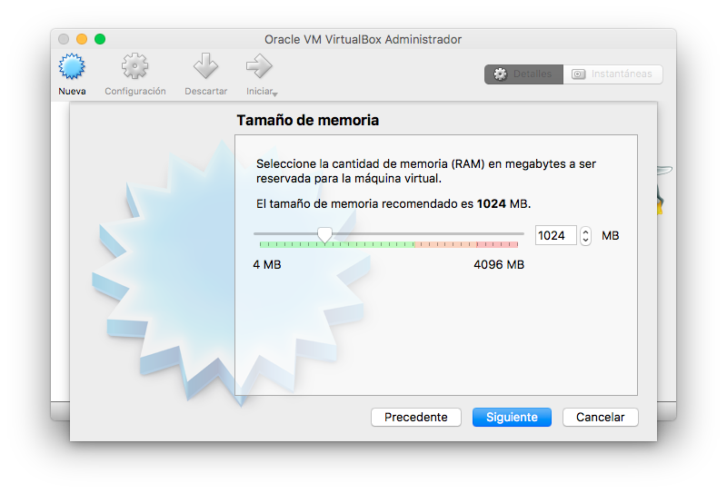
El siguiente paso es crear un disco duro virtual. En realidad se trata de un enorme fichero con la extensión .vdi en nuestra máquina física:
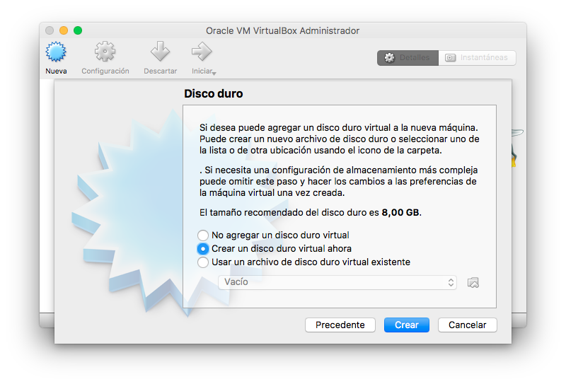
VirtualBox es capaz de trabajar con diferentes formatos de discos virtuales. Seleccionamos el formato nativo de Vbox:
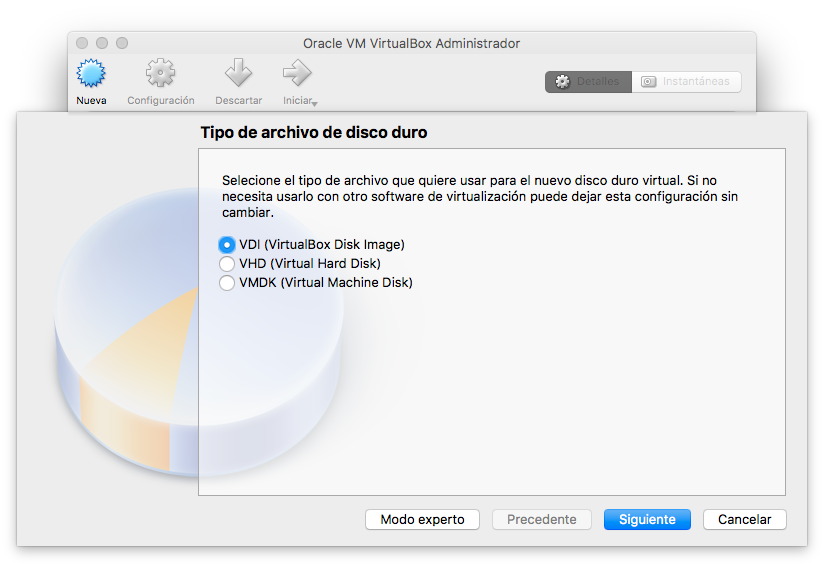
Tenemos dos posibilidades: un gran archivo de tamaño determinado, o uno que vaya creciendo dinámicamente para almacenar ese disco duro virtual. Seleccionamos la segunda opción:
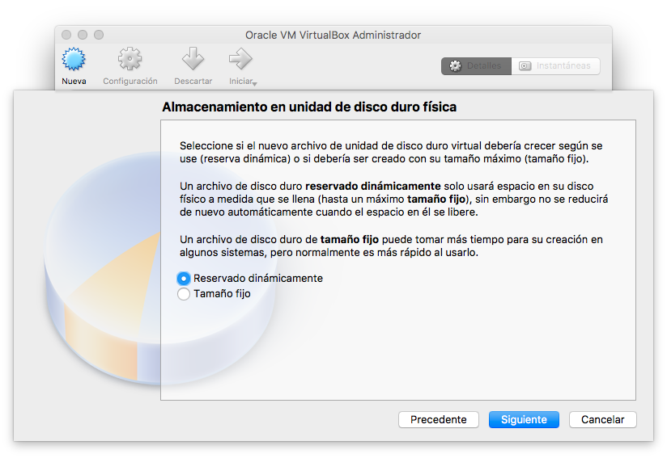
Seguidamente seleccionamos el tamaño máximo del disco duro virtual:
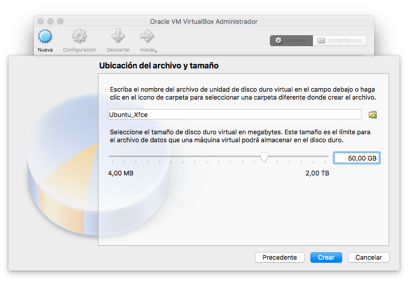
Al pulsar en el botón [Crear] se creará la máquina virtual y aparecerá en la lista de máquinas en la ventana principal de VirtualBox.
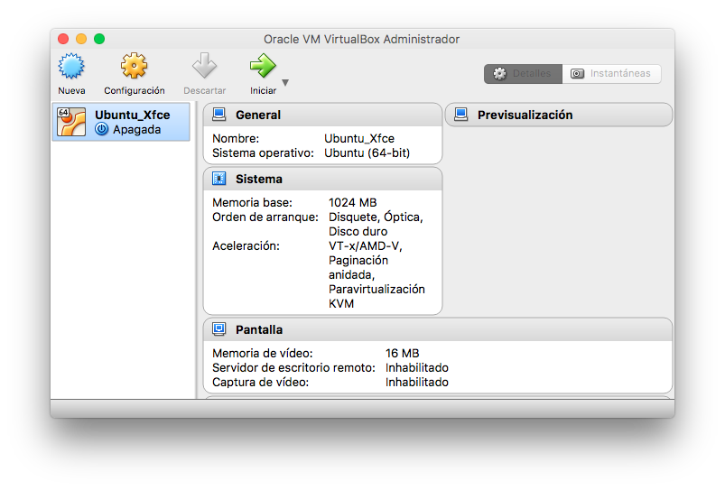
Instalando un sistema operativo en la máquina virtual
Lo primero es seleccionar el sistema operativo a instalar. Debe ser uno para el que tengamos el DVD o CD de instalación. En nuestro ejemplo, vamos a instalar Linux. Tenemos un ranking de las distribuciones más populares en http://distrowatch.com/. La que instalaremos es una de las más populares, Ubuntu, que se distribuye en diferentes alternativas dependiendo del programa de escritorio que queramos utilizar. Dado que el rendimiento de la sesión virtual siempre va a ser algo inferior al de una máquina física, prefiero utilizar un escritorio light como es el caso de Xfce.
La versión de Ubuntu con este escritorio se llama Xubuntu, y podemos descargar el CD de instalación desde https://xubuntu.org/
Tanto Ubuntu como Xubuntu publican una nueva versión cada seis meses, generalmente en abril y en octubre. Cada versión tiene un número que indica el año y mes de lanzamiento. Por ejemplo, la versión 16.04 fue la presentada en abril de 2016. Además se suelen bautizar con nombres de animales más o menos exóticos. La 16.04 es la “Xenial Xerus”.
Ubuntu se refresca diariamente con las últimas actualizaciones de cada programa. El mantenimiento está garantizado durante un período de nueve meses a contar desde el lanzamiento de cada versión, margen suficiente para que descarguemos e instalemos la siguiente. Para aquellas personas que no quieran estar cambiando continuamente de versión, existen unas especiales llamadas LTS (Long Time Support) cuyo mantenimiento se garantiza durante tres años.
La página de descargas de Xubuntu proporciona tanto la última versión regular como la LTS más reciente. Lo que obtenemos es un archivo con la extensión .iso que contiene una imagen de disco. El nombre puede ser algo así como xubuntu-16.10-desktop-amd64.iso. Tenemos dos opciones:
- grabar un CD o un DVD a partir de ese archivo de imagen
- utilizar el archivo como CD virtual. Vamos a optar por esta segunda opción.
El primer paso es iniciar VirtualBox y en la lista de máquinas virtuales de la izquierda seleccionar la que hemos creado. Seguidamente pulsamos en el icono Iniciar:
Cuando iniciamos la máquina virtual por primera vez, VirtualBox nos pregunta si tenemos un DVD de instalación o vamos a usar un disco virtual:
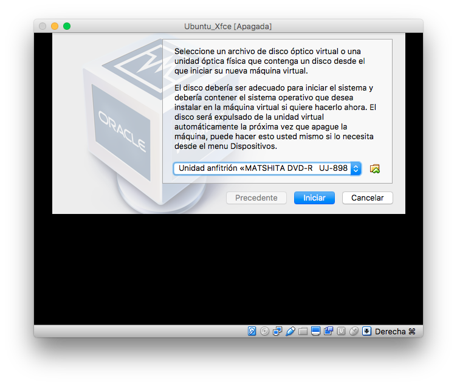
Esta ventana muestra una lista desplegable para seleccionar entre nuestras unidades, y un pequeño icono amarillo a la derecha para seleccionar un archivo de imagen como DVD virtual. Pulsamos aquí y seleccionamos el archivo descargado:
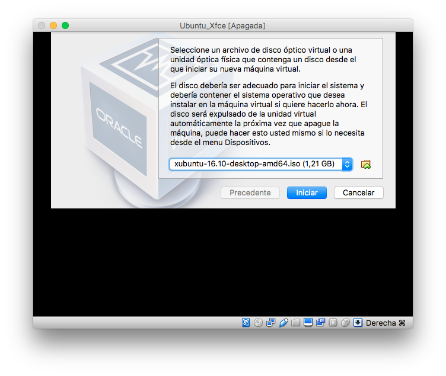
Al pulsar en el botón Iniciar se arranca la sesión virtual en una segunda ventana:
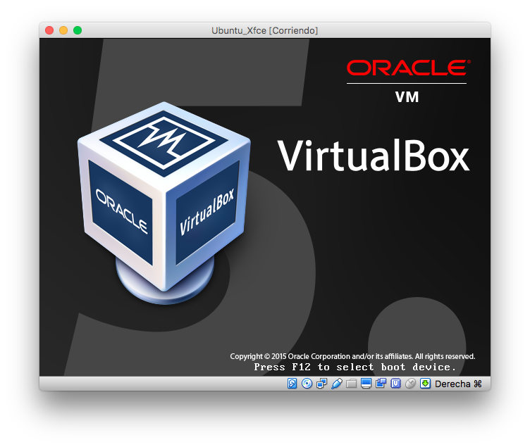
En la barra superior de la ventana veremos el nombre de la máquina, y en la barra inferior una serie de iconos para controlarla.
Si el DVD de instalación no es válido, se mostrará la pantalla en negro y un mensaje de error:
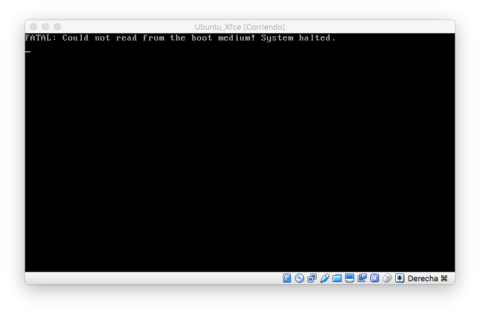
En caso contrario, se iniciará el proceso de instalación. Finalizado este, tendremos el escritorio de nuestra máquina virtual en una ventana de la física.
Pasos post instalación
Guest Additions
VirtualBox es un software instalado en nuestra conputadora, pero la máquina virtual no es consciente de estar ejecutándose bajo la tutela de Vbox. Todo el software instalado en ella está configurado para una hipotética máquina física.
Algunas de las posibilidades que proporciona VirtualBox no funcionan correctamente si en la sesión virtual no instalamos algunos programas complementarios. Estos se encuentran en un CD virtual llamado “Guest Additions”.
Este CD lo proporciona VirtualBox. Basta con iniciar la máquina virtual y desde el menú de VirtualBox, seleccionar la opción del menú Dispositivos > Instalar Guest Additions.
Una vez realizado este paso aparece ese CD virtual en el escritorio. Haciendo doble clic en el icono, visualizaremos su contenido:
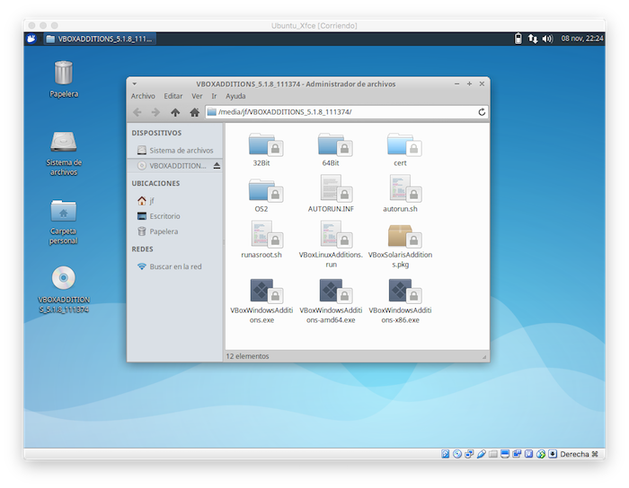
Tenemos que ejecutar el programa VboxLinuxAdditions.run. Para ello, comenzamos por tomar nota de la carpeta donde se aloja el CD virtual:
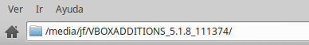
En Linux, y en todos los sistemas operativos derivados de Unix, no existen letras de unidad al estilo de windows, por ejemplo, C:. En su lugar, cada disco está asociado a una carpeta. En nuestro ejemplo, los CD, los DVD, etc, están asociados a la carpeta /media. Esta carpeta se muestra vacía cuando no hay ningún CD insertado.
Seguidamente abrimos una sesión de terminal. Encontraremos el acceso en el menú de xubuntu, con el nombre de Emulador de terminal:
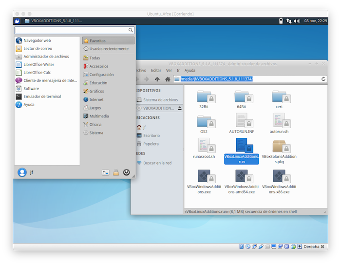
En el terminal, nos situamos en la carpeta en cuestión introduciendo a continuación del prompt $ el comando
$ cd /media/jf/VBOXADDITIONS_5.1.8_111374/
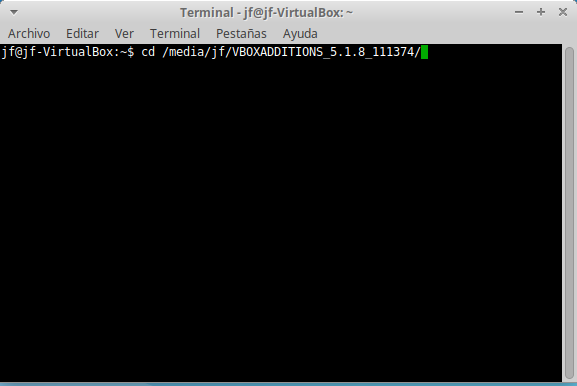
Seguidamente comprobamos el contenido de la carpeta con el comando ls.
$ ls 32Bit AUTORUN.INF cert runasroot.sh VboxSolarisAdditions.pkg VboxWindowsAdditions.exe 64Bit autorun.sh OS2 VBoxLinuxAdditions.run VBoxWindowsAdditions-amd64.exe VBoxWindowsAdditions-x86.exe
Ejecutamos el programa con el comando:
$ sudo ./VboxLinuxAdditions.run
La máquina virtual pedirá nuestra password. Tras introducirla, se procede a la instalación. Una vez terminado el proceso, se sale de la emulación de termina introduciendo el comando
$ exit
En el icono del DVD virtual que hay en el escritorio, pulsamos con el botón secundario del ratón y en el menú emergente seleccionamos Expulsar Volumen.
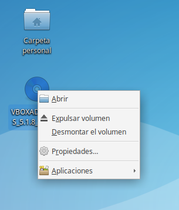
Cerramos la máquina virtual y la reinicializamos para que las Guest Additions tengan efecto.
Tamaño de la ventana
Una de las mejoras que nos proporcionan las Guest Additions es la posibilidad de que la sesión virtual ocupe la pantalla completa, tapando el escritorio de la máquina física.
VirtualBox tiene una tecla mágica llamada “Host”. En mi caso, un ordenador Mac, es la tecla cmd derecha. Esto se ve en la esquina inferior derecha de la ventana de la máquina virtual. Podemos configurarla en el menú Preferencias en la ventana principal de VirtualBox.
Durante la sesión de trabajo, podemos cambiar a pantalla completa pulsando Host-F.
Intercambio de datos
Otra posibilidad de las Guest Additions es el intercambio de datos entre la máquina física y la virtual. Para ello, apagamos la máquina virtual y entramos en la configuración de la misma desde el menú principal de VirtualBox.
En la pestaña General activamos “Compartir portapapeles” y “Arrastrar y soltar”:
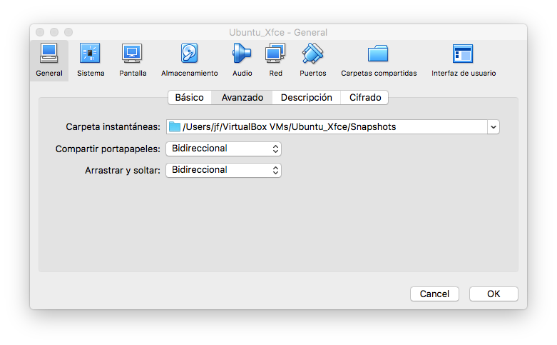
En la pestaña Carpetas compartidas seleccionamos una carpeta de la máquina física:
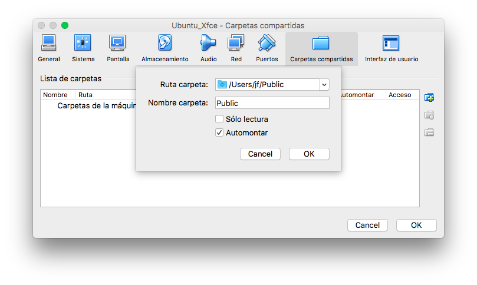
Tras reiniciar la sesión virtual, comprobamos que el portapapeles permite copiar y pegar de una máquina a otra. La carpeta compartida se puede ver como:
/media/sf_Public/
Aunque debemos tener permisos activados para tener acceso desde la máquina virtual a esa carpeta. Para ello tenemos que hacer lo siguiente:
- En el menú de aplicaciones, seleccionar el grupo configuración y seguidamente el programa Users and Groups.
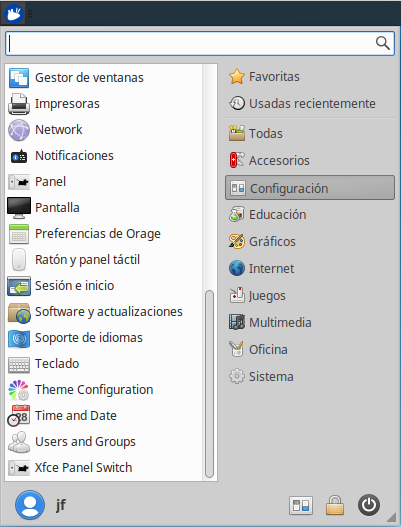
- Una vez iniciado el programa para configurar grupos y usuarios, pulsamos en el menú Manage Groups. El grupo vboxf indica los usuarios que tienen acceso a las carpetas de la máquina física. En la lista de grupos, hacemos doble clic sobre el mismo:
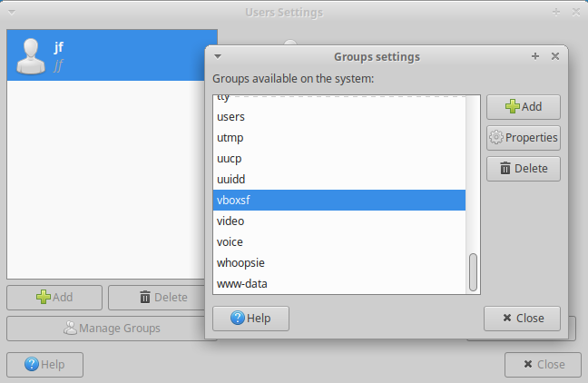
- En la lista de usuarios, marcamos el nuestro como integrante del grupo:
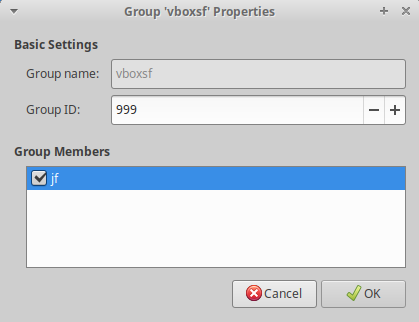
Para realizar los cambios tendremos que introducir nuestra password. Para que tengan efecto y podamos visualizar el contenido de las carpetas compertidas, hay que reiniciar la máquina virtual.